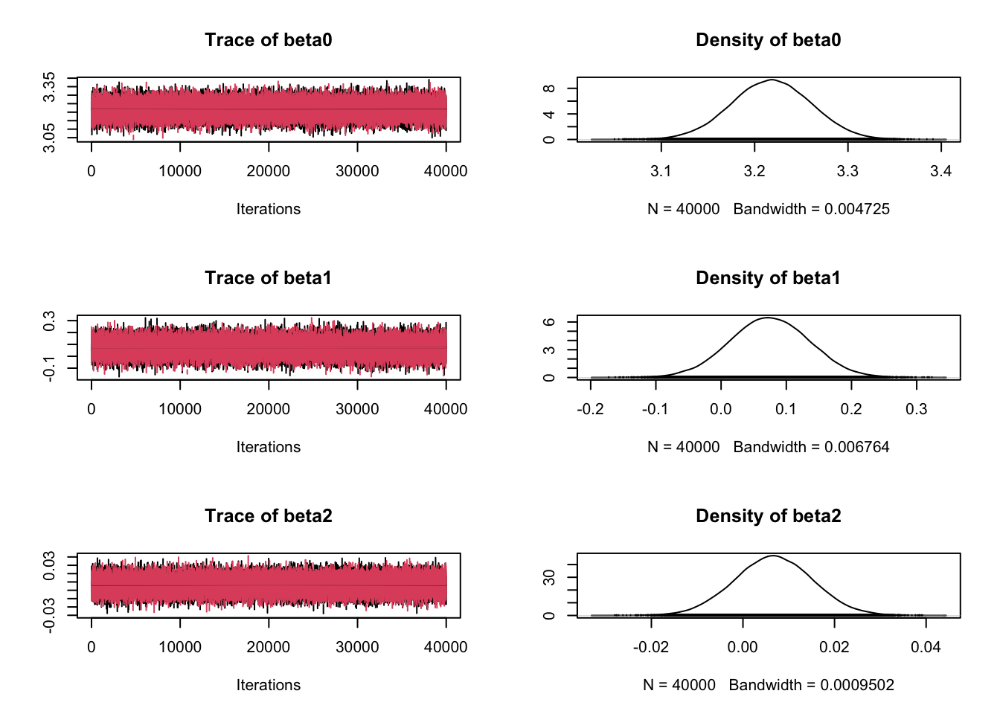
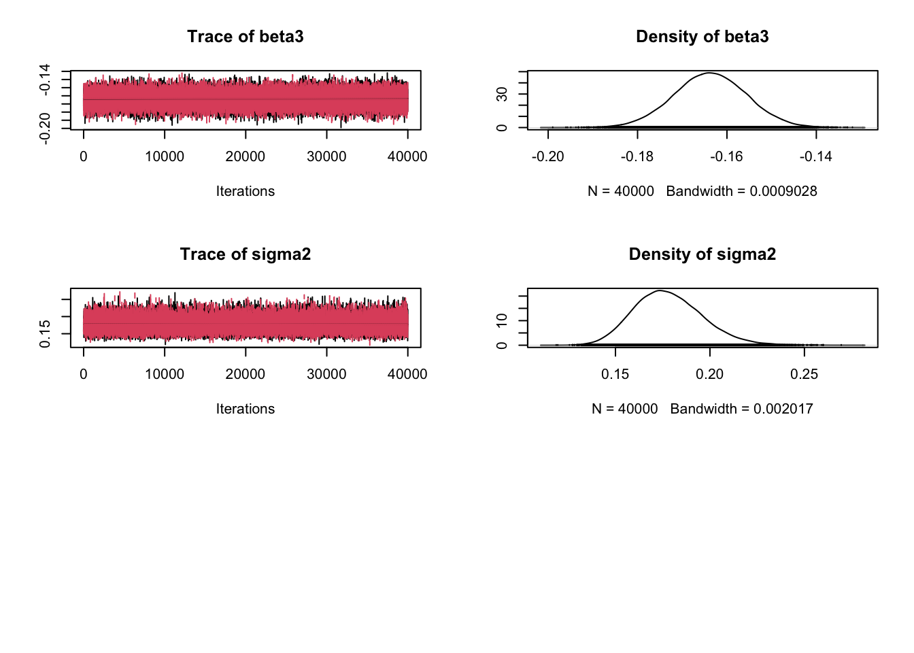
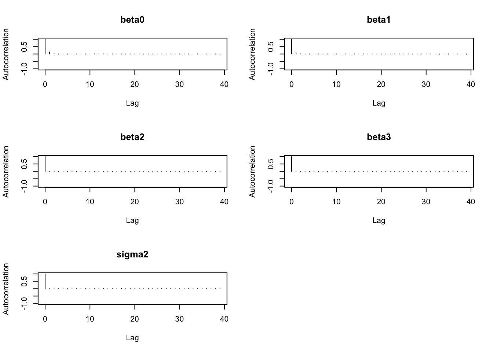
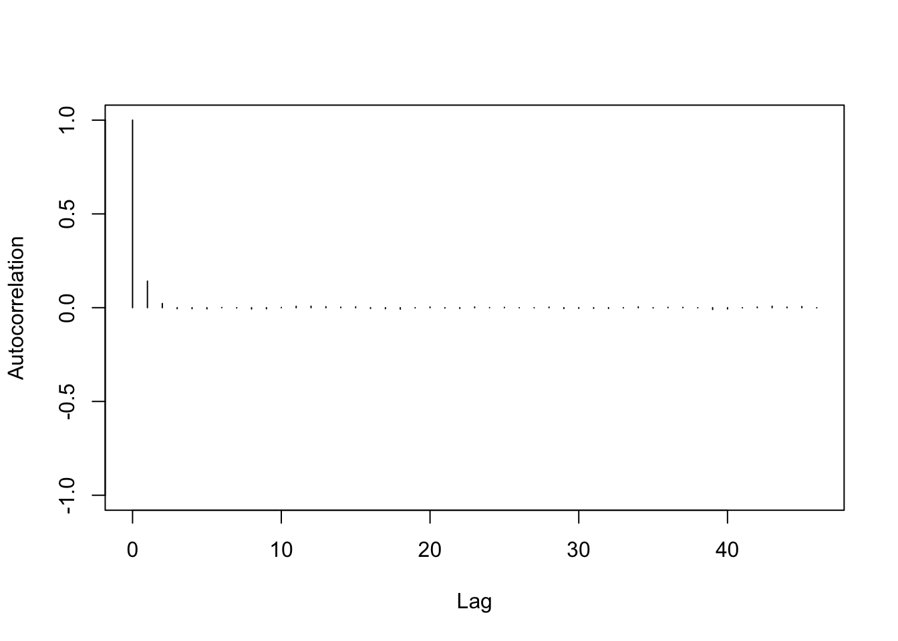
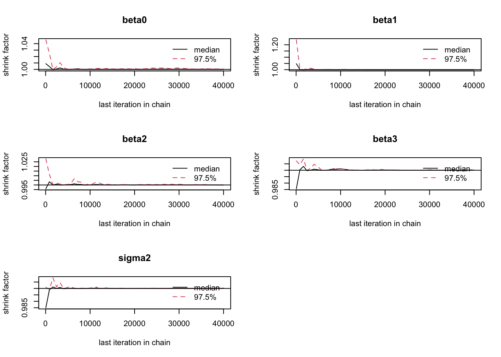

library(tidyverse)
library(nimble)
library(coda)
library(igraph)
library(R6)
library(knitr)Tutorial5
Packages and Data
Consider birth weight data 𝑤 = (𝑤1, …, 𝑤200), in Kg, from 200 births at Hospital H. The data are given in the R workspace file Birth_weights_Tutorial_3 in the Tutorials folder in Moodle. The data file also contains binary information on the Index of Multiple Deprivation (IMD) of the mother. 0 denotes high deprivation (index from 1 to 5), while 1 denotes low deprivation (index from 6 to 10). Note the counter-intuitive interpretation of the IMD values on the scale from 1 to 10, and subsequently on the binary scale.
load("Birth_weights_Tutorial_5.RData")
d <- as.data.frame(cbind(age, birth_weights, IMD_binary, pm2_5))
d <- d |>
rename(
bw = birth_weights,
imd = IMD_binary) |>
mutate(
cage = age - mean(age),
cpm2_5 = pm2_5 - mean(pm2_5),
imd_plot = ifelse(imd == 1, "Low", "High"))
# remove(age, birth_weights, cage, cpm2_5, imd, IMD_binary)Fit a linear model with the birth weights 𝑤𝑖 , 𝑖 = 1, …, 200 as the outcome that follows a Normal distribution so that (given 𝜇𝑖 and 𝜎), (𝑤𝑖 |𝜇𝑖 , 𝜎 ∼ 𝑁(𝜇𝑖 , 𝜎2 )), with the weights being independent. Center the continuous covariates age and pm2_5, creating two new covariates, say, cage and cpm2_5 Overall, the covariates should be the binary IMD variable, as well as the centered cage and cpm2_5.
Parametrise the mean 𝜇𝑖 for birth weight 𝑤𝑖 so that,
𝜇𝑖 = 𝛽0 + 𝛽1 ∗ 𝐼𝑀𝐷𝑖 + 𝛽2 ∗ 𝑐𝑎𝑔𝑒 + 𝛽3 ∗ 𝑐𝑝𝑚2_5.
Place a 𝐿𝑜𝑔 − 𝑁𝑜𝑟𝑚𝑎𝑙(1, 0.72 ) prior on 𝛽0 . Place suitably non-informative priors on 𝛽1 , 𝛽2 and 𝛽3 . For the precision 𝜏 = 1/𝜎2 , we will assume a Gamma prior distribution 𝐺(0.1, 0.1).
Use Nimble to derive the posterior distribution 𝜋(𝛽0 , 𝛽1 , 𝛽2 , 𝛽3 , 𝜎2 |𝑤). Run 2 chains. Consider a burn-in of 100000 iterations, with 400000 further iterations for each chain. Thin by 10.
Obtain plots of the posterior distributions and diagnostic plots. Check the MCMC convergence, not forgetting to check the chains length in relation to the autocorrelations and MC error.
Answer the following questions, to an accuracy of 3 decimal places where appropriate. (Note that you should also be checking model assumptions and model fit before reporting inferences, but this will be one of the topics in the next tutorial sheet.)
#covariates and response
y = d$bw
imd = d$imd
cage = d$cage
cpm2_5 = d$cpm2_5
# Specify the statistical model
n = nrow(d)
mod <- nimbleCode({
# Specify the likelihood:
for(i in 1:n){
mu[i] <- beta0+beta1*imd[i]+beta2*cage[i]+beta3*cpm2_5[i]
y[i] ~ dnorm(mu[i],tau)
}
# Prior for beta
beta0 ~ dlnorm(1, 0.72)
beta1 ~ dnorm(mu0,tau0)
beta2 ~ dnorm(mu0,tau0)
beta3 ~ dnorm(mu0,tau0)
tau0 <- 1/sigma02
# Prior for the precision
tau ~ dgamma(a, b)
# Compute the variance
sigma2 <- 1/tau
})# hyperparameters for the betas and tau
# would find n in R environment. Including here to suppress a warning
Consts <- list(mu0=0, sigma02=1000, a=0.1, b=0.1, n=200)
# list with data
Data <- list(y=y,imd=imd,cage=cage,cpm2_5=cpm2_5)
# Initial values
Inits <- list(beta0 = 1, beta1 = 0, beta2 = 0, beta3 = 0, tau = 1)
# Nimble will generate the rest
# Build and Compile the model
# to build the model
mod_re <- nimbleModel(code = mod, name = "mod", constants = Consts,
data = Data, inits<-Inits)Defining modelBuilding modelSetting data and initial valuesRunning calculate on model
[Note] Any error reports that follow may simply reflect missing values in model variables.Checking model sizes and dimensions# To compile the model
Cmod_re <- compileNimble(mod_re)Compiling
[Note] This may take a minute.
[Note] Use 'showCompilerOutput = TRUE' to see C++ compilation details.mod_Conf <-
configureMCMC(mod_re,
monitors = c("beta0", "beta1", "beta2", "beta3", "sigma2"),
enableWAIC = TRUE, print = TRUE) ===== Monitors =====
thin = 1: beta0, beta1, beta2, beta3, sigma2
===== Samplers =====
RW sampler (1)
- beta0
conjugate sampler (4)
- tau
- beta1
- beta2
- beta3# build the MCMC algorithm
mod_reMCMC <- buildMCMC(mod_Conf)
# compile the MCMC chain
Cmod_reMCMC <- compileNimble(mod_reMCMC, project = mod_re)Compiling
[Note] This may take a minute.
[Note] Use 'showCompilerOutput = TRUE' to see C++ compilation details.####################################################################################
####### POSTERIOR SAMPLES IN CODA FORMAT TO GET MORE EASILY PLOTS AND DIAGNOSTICS #
####################################################################################
set.seed(10)
mod_reInits <- list(list(beta0 = 1, beta1 = 0, beta2 = 0, beta3 = 0, tau = 3),
list(beta0 = 2, beta1 = 0, beta2 = 0, beta3 = 0, tau = 4))
posterior <- runMCMC(Cmod_reMCMC, niter = 500000, thin=10, nburnin=100000,
summary = TRUE, WAIC = TRUE, samples = TRUE, nchains=2,
samplesAsCodaMCMC=TRUE, inits = mod_reInits) running chain 1...|-------------|-------------|-------------|-------------|
|-------------------------------------------------------|running chain 2...|-------------|-------------|-------------|-------------|
|-------------------------------------------------------|combinedchains <- mcmc.list(posterior$samples$chain1, posterior$samples$chain2)summary(combinedchains)
Iterations = 1:40000
Thinning interval = 1
Number of chains = 2
Sample size per chain = 40000
1. Empirical mean and standard deviation for each variable,
plus standard error of the mean:
Mean SD Naive SE Time-series SE
beta0 3.217961 0.042629 1.507e-04 1.730e-04
beta1 0.074496 0.061026 2.158e-04 2.344e-04
beta2 0.006679 0.008573 3.031e-05 3.062e-05
beta3 -0.163744 0.008145 2.880e-05 2.892e-05
sigma2 0.178061 0.018198 6.434e-05 6.345e-05
2. Quantiles for each variable:
2.5% 25% 50% 75% 97.5%
beta0 3.13408 3.1892212 3.217953 3.24680 3.30109
beta1 -0.04589 0.0334044 0.074347 0.11589 0.19351
beta2 -0.01011 0.0009389 0.006681 0.01244 0.02358
beta3 -0.17976 -0.1691798 -0.163746 -0.15826 -0.14774
sigma2 0.14599 0.1652134 0.176832 0.18960 0.21715
post_1 <- as.data.frame(posterior$samples$chain1)
post_2 <- as.data.frame(posterior$samples$chain2)
plot(combinedchains) # too many plots sometimes

#plot(combinedchains[,c('beta1','beta2','sigma2')])
#plot(combinedchains[,'beta[1]']) # when defining a vector of parameters
autocorr.plot(posterior$samples$chain1)
autocorr.plot(posterior$samples$chain1[,"beta0"])
autocorr.plot(posterior$samples$chain2)
gelman.diag(combinedchains)Potential scale reduction factors:
Point est. Upper C.I.
beta0 1 1
beta1 1 1
beta2 1 1
beta3 1 1
sigma2 1 1
Multivariate psrf
1gelman.plot(combinedchains)
ESS <- t(effectiveSize(posterior$samples$chain2))
ESS <- as.data.frame(ESS)
kable(ESS, digits = 3)| beta0 | beta1 | beta2 | beta3 | sigma2 |
|---|---|---|---|---|
| 30680.54 | 33687.89 | 38425.57 | 39329.71 | 40000 |
# cat("The Effective Sample Size is ", ESS)a. Posterior inferences can be trusted, considering convergence and mixing. Is this statement true or false? [1 mark]
Considering births at hospital H in general, state the estimated mean birth weight for parents classified within then high-deprivation band, of average age, with an exposure to PM2.5 that is also average. [1 mark]
Provide the left limit of the 95% credible interval for the estimate in (b). [1 mark]
Provide the right limit of the 95% credible interval for the estimate in (b). [1 mark]
State the predicted weight for a specific birth from a mother that is classified within the low-deprivation band, is 29 years old, and their exposure to PM2.5 is 16 𝜇𝑔/𝑚3. [1mark]
Provide the left limit of the 95% credible interval for the prediction in (e). [1 mark]
Provide the right limit of the 95% credible interval for the prediction in (e). [1 mark]
Describe to someone with no statistical knowledge the effect of the model covariates, considering the interpretation of the estimates for 𝛽0, 𝛽1, 𝛽2, 𝛽3. [3 marks]
Comment on how important each one of the covariates seems to be for the modelling of birth weights. [2 marks]